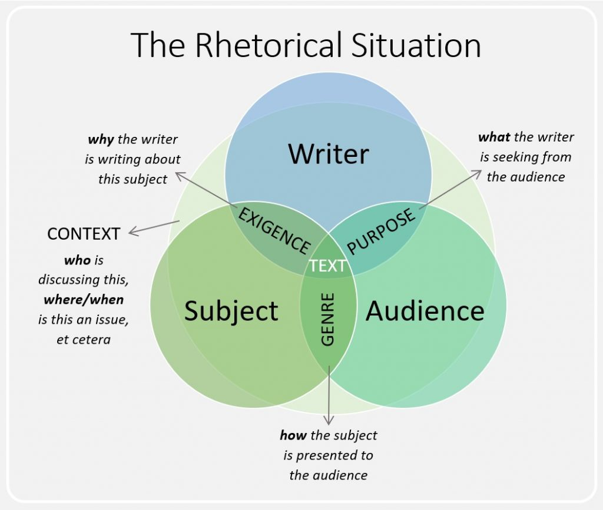
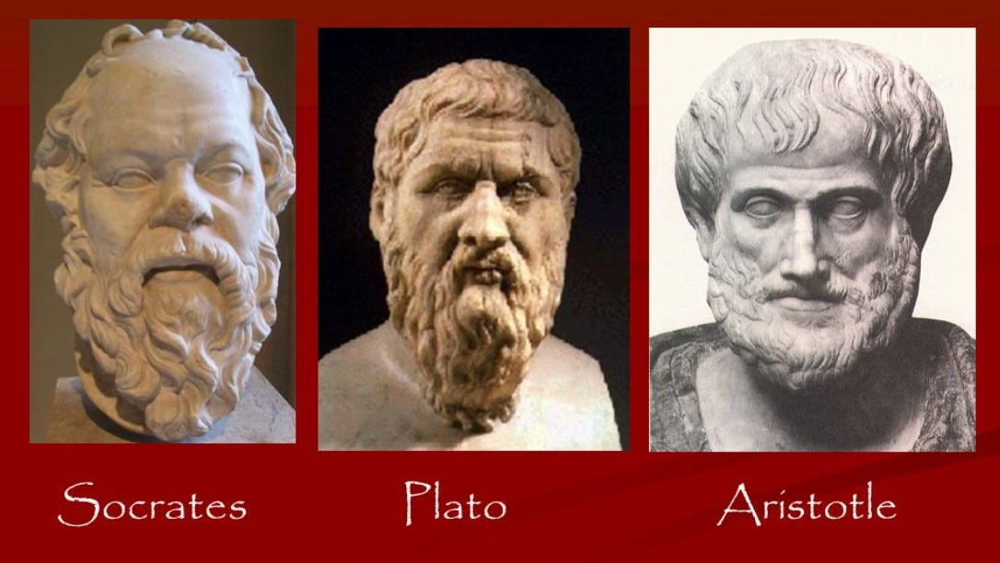

English 103 Slides
Table of Contents
Introduction
This document collects the slide content presented in your English 103 course for your review. Note that this is the exact same content included on slides, without any additional explanatory material. Slide content is not a substitute for attending class and likely will not make sense without that classroom context. I will update this same file as the semester progresses (please remind me if I've forgotten) so make sure to check back often if you find it helpful as a supplemental document.
Last updated September 02, 2026.
Week 1 / Thursday

Figure 1: A diagram of the rhetorical situation.
Week 2 / Tuesday
Ancient Greek Rhetoric
- The Classical Era of Athens: 508 BC – 322 BC
- Socrates: ca. 470 BC – 399 BC
- Plato: ca. 428 BC – 348 BC
- Aristotle: 384 BC – 322 BC
Plato, Socrates, and Aristotle

Figure 2: Socrates, Plato, and Aristotle are (arguably) the three most important theorists of rhetoric in the Western tradition.
Why Ancient Greece Matters
- Democracy
- Philosophy
- Rhetoric
Ancient Greek Rhetoric: Context
- The Trivium
- Grammar
- Logic
- Rhetoric
- The Sophists: First teachers of rhetoric
Critiques of Rhetoric
- Is it moral?
- What are the potential negative effects?
Rhetoric and Manipulation
Figure 3: Rhetoric, like the Force, can be used for good and for evil.
Aristotle
- Rhetoric is a tool to arrive at truth and goodness
- The purpose of rhetoric is to identify the possibilities for persuasion within a given situation.
Rhetoric's Three Domains
- Deliberative: What should we do? (Political)
- Forensic: What happened? (Legal)
- Epideictic: Where do we put praise and blame? (Social/political)
The Four Primary Rhetorical Appeals
- Ethos: Appeals to an audience's sense of character. What are ways that you assess the character of a speaker or writer?
- Pathos: Appeals to an audience's sense of feeling, passion, or emotion. What examples of pathos appeals can you think of?
- Logos: Appeals to an audience's sense of logic/reasoning, such as facts, statistics, quotes, testimonials, etc. What sorts of logos appeals do you find most persuasive?
- Kairos: Appeals to an audience's sense of time and place. Can you think of failures in terms of Kairos?
Kairotic Failure
Figure 4: The celebrity "imagine" video was certainly a failure to understand the moment.
Where to Apply Rhetoric
- Situations where there are legitimate multiple sides to an issue.
- Situations in which you need to communicate effectively.
- Situations in which you need to analyze the arguments of others.
Aristotelian Analysis
- Considering the context of a situation: audience, relevant facts, time-period, etc.
- Examining the text and how it presents its argument, most specifically by…
- Identifying the use of the primary rhetorical strategies (ethos, pathos, logos, and kairos), that are used to make the argument more or less persuasive.
- Making an argument about whether the text should be believed based on points 1-3.
Week 2 / Thursday
Which Appeal?
As a doctor with over 20 years of experience in the medical field, I can assure you that this medication is safe and effective.
Which Appeal?
If we implement renewable energy solutions now, we can reduce our carbon footprint by 40% over the next decade, which will slow down climate change and reduce future environmental costs.
Which Appeal?
Now is the perfect time to invest in renewable energy, just as new government subsidies are becoming available and public demand for sustainable solutions is at an all-time high.
Which Appeal?
Think about the joy on a child's face when they receive a warm meal and a safe place to sleep. Your donation can make that possible.
Which Appeal?
With the holiday season approaching, there’s no better moment to donate to our charity and make a difference in someone’s life.
Which Appeal?
Imagine the pain and heartbreak of losing a loved one to a preventable disease. By donating to our charity, you can protect those in need.
Which Appeal?
Having served as a firefighter for a decade, I know the importance of fire safety measures and why they should never be compromised.
Which Appeal?
According to the latest research, companies that invest in employee wellness programs see a 25% reduction in healthcare costs within two years.